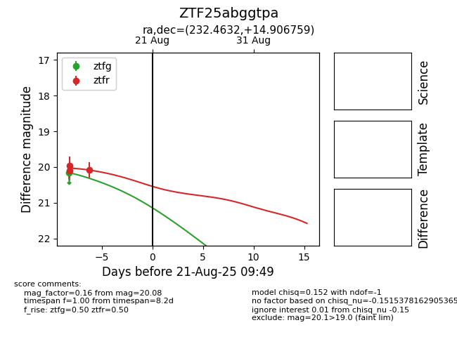

Target ZTF25abggtpa at 2025-08-21 09:49, see:
FINK: fink-portal.org/ZTF25abggtpa
Lasair: lasair-ztf.lsst.ac.uk/objects/ZTF25abggtpa
ALeRCE: alerce.online/object/ZTF25abggtpa
alt names
ZTF25abggtpa (ztf,alerce)
coordinates:
equatorial (ra, dec) = (232.4632,+14.90676)
galactic (l, b) = (22.7578,+51.25449)
photometry
last ztfg=20.16, ztfr=20.08
1 ztfg, 3 ztfr detections
